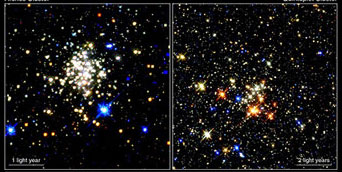

The term ‘bulge’ is used to describe the dense spheroidal swarm of stars often found in the centres of spiral and S0 galaxies. The bulge of the Milky Way appears to be fairly typical – a slightly flattened sphere of radius ~6,500 light years – while bulge sizes in other galaxies vary from several hundred to several tens of thousands of light years, depending on the type and size of the galaxy. Within the bulge, stars orbit in a completely random fashion meaning that the bulge is velocity dispersion supported rather than rotation supported.
The ages of bulge stars is a topic currently under investigation. Until recently, stars in the bulge our own Galaxy were all thought to be old, population II stars. The high number of RR Lyrae stars in the bulge, and the lack of young, blue stars in the colour-magnitude diagram for Baade’s window, both pointed to an old stellar population.

Credit: STScI/NASA
However, space-based infrared cameras, which are able to see beyond the dust that obscures our view toward the centre of the Galaxy, have shown us that this is not entirely correct. Recent observations have revealed the presence of young, massive stars in the bulge, a sure indicator of recent star formation. Although the bulge is dominated by stars older than 7 billion years, intermediate age (~1-5 billion years) and young (less than 500 million years) population I stars are also present. Indeed, some of the largest young star clusters in the Milky Way (the Arches, Quintuplet, and Central clusters) are located at the Galactic centre. This is commonly considered as evidence for secular evolution within the bulge, but may also indicate the effects of minor mergers. In galaxies other than the Milky Way, there is similar evidence that intermediate age and young stars exist in the predominantly old bulges.
Although the majority of bulge stars have ages similar to stars in the stellar halo, there is a large difference between the metallicities of the two populations. Bulge stars are generally more metal-rich and have a wider range of metallicities than stars in the metal-poor halo.
There is also strong evidence that the bulges of large galaxies harbour supermassive black holes at their centres. Observations of material orbiting Sagittarius A* at the centre of the Milky Way suggest that a 3 million solar mass black hole resides there.